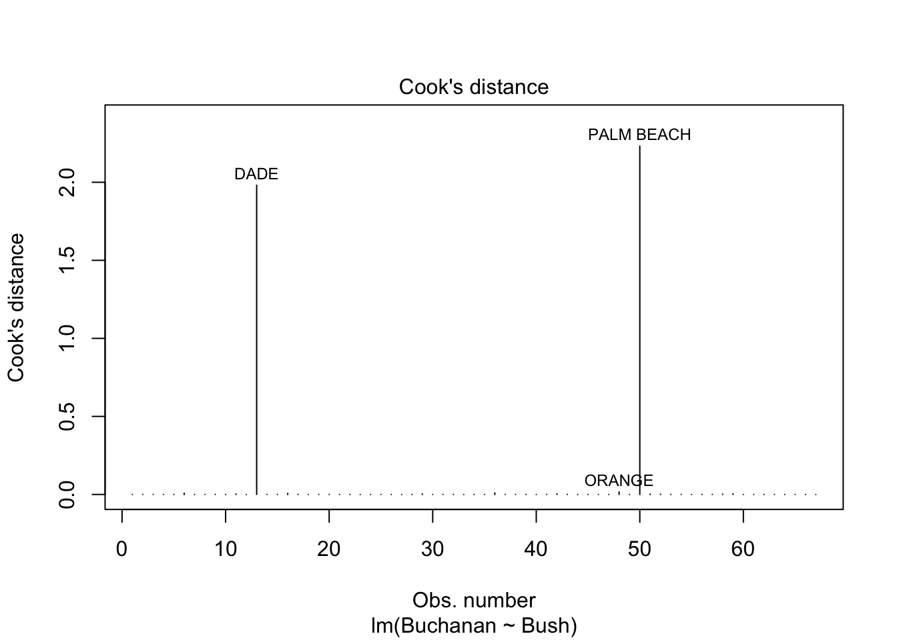
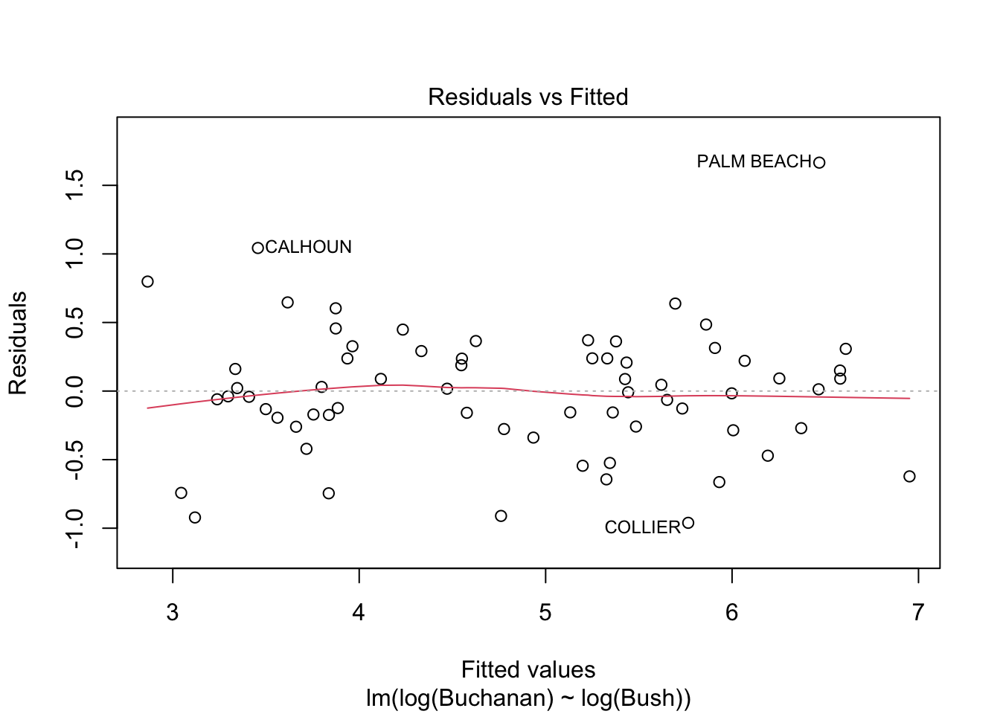
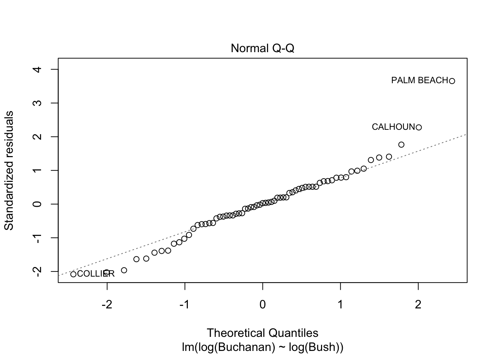

The following object is masked from 'package:dplyr':
recode
Loading required package: effects
lattice theme set by effectsTheme()
See ?effectsTheme for details.
Question 1
Question 1 (Data file: house.selling.price.2 from smss R package) For the house.selling.price.2 data the tables below show a correlation matrix and a model fit using four predictors of selling price. (Hint 1: You should be able to answer A, B, C just using the tables below, although you should feel free to load the data in R and work with it if you so choose. They will be consistent with what you see on the tables. Hint 2: The p-value of a variable in a simple linear regression is the same p-value one would get from a Pearson’s correlation (cor.test). The p-value is a function of the magnitude of the correlation coefficient (the higher the coefficient, the lower the p-value) and of sample size (larger samples lead to smaller p-values). For the correlations shown in the tables, they are between variables of the same length.) With these four predictors,
A. For backward elimination, which variable would be deleted first? Why?
Backward elmination asks to delete the largest p-value which is beds vs house and all other p-values are inside significant level
B. For forward selection, which variable would be added first? Why?
Size would be added first because size has smallest significant value
C. Why do you think that BEDS has such a large P-value in the multiple regression model, even though it has a substantial correlation with PRICE? the varible beds is not precisely describe the room number. It may also be described as study, lounge and so on. therefore, it has large p value.
D. Using software with these four predictors,find the model that would beselectedusing each criterion: 1. R2 2. Adjusted R2 3. PRESS 4. AIC 5. BIC
Code
summary(house)
Error in summary(house): object 'house' not found
Code
#n= sample size#p= number of predictors#R2#Adjusted R2 = 1-（1-R^2)(n-1)/(n-p-1)# PRESS#AIC n ∗ log(RSS/n) + 2p# BIC n ∗ log(RSS/n) + log(n) ∗ p
E. Explain which model you prefer and why.
Question 2
(Data file: trees from base R) From the documentation: “This data set provides measurements of the diameter, height and volume of timber in 31 felled black cherry trees. Note that the diameter (in inches) is erroneously labeled Girth in the data. It is measured at 4 ft 6 in above the ground.” Tree volume estimation is a big deal, especially in the lumber industry. Use the trees data to build a basic model of tree volume prediction. In particular, A. Fit a multiple regression model with the Volume as the outcome and Girth and Height as the explanatory variables
Call:
lm(formula = Volume ~ Girth + Height, data = trees)
Residuals:
Min 1Q Median 3Q Max
-6.4065 -2.6493 -0.2876 2.2003 8.4847
Coefficients:
Estimate Std. Error t value Pr(>|t|)
(Intercept) -57.9877 8.6382 -6.713 2.75e-07 ***
Girth 4.7082 0.2643 17.816 < 2e-16 ***
Height 0.3393 0.1302 2.607 0.0145 *
---
Signif. codes: 0 '***' 0.001 '**' 0.01 '*' 0.05 '.' 0.1 ' ' 1
Residual standard error: 3.882 on 28 degrees of freedom
Multiple R-squared: 0.948, Adjusted R-squared: 0.9442
F-statistic: 255 on 2 and 28 DF, p-value: < 2.2e-16
B. Run regression diagnostic plots on the model. Based on the plots, do you think any of the regression assumptions is violated?
Code
par(mfrow =c(2,3))plot(fit,which =1:6)
Question 3
(Data file: florida in alr R package) In the 2000 election for U.S. president, the counting of votes in Florida was controversial. In Palm Beach County in south Florida, for example, voters used a so-called butterfly ballot. Some believe that the layout of the ballot caused some voters to cast votes for Buchanan when their intended choice was Gore. The data has variables for the number of votes for each candidate—Gore, Bush, and Buchanan. A. Run a simple linear regression model where the Buchanan vote is the outcome and the Bush vote is the explanatory variable. Produce the regression diagnostic plots. Is Palm Beach County an outlier based on the diagnostic plots? Why or why not?
Code
head(florida)
Gore Bush Buchanan
ALACHUA 47300 34062 262
BAKER 2392 5610 73
BAY 18850 38637 248
BRADFORD 3072 5413 65
BREVARD 97318 115185 570
BROWARD 386518 177279 789
Code
fit2<-lm(Buchanan~Bush, data = florida)plot(fit2,which =1:6)

B. Take the log of both variables (Bush vote and Buchanan Vote) and repeat the analysis in (A.) Does your findings change?
Code
fit2<-lm(log(Buchanan)~log(Bush), data = florida)plot(fit2,which =1:6)


Source Code
---title: "Homework 5"author: "Xiaoyan"description: "Template of course blog qmd file"date: "05/09/2023"format: html: toc: true code-fold: true code-copy: true code-tools: truecategories: - hw5 - - ---```{r}library(tidyr)library(dplyr)library(readxl)library(ggplot2)library(smss)library(alr4)```# Question 1Question 1(Data file: house.selling.price.2 from smss R package)For the house.selling.price.2 data the tables below show a correlation matrix and a model fit using four predictors of selling price.(Hint 1: You should be able to answer A, B, C just using the tables below, although you should feel free to load the data in R and work with it if you so choose. They will be consistent with what you see on the tables.Hint 2: The p-value of a variable in a simple linear regression is the same p-value one would get from a Pearson’s correlation (cor.test). The p-value is a function of the magnitude of the correlation coefficient (the higher the coefficient, the lower the p-value) and of sample size (larger samples lead to smaller p-values). For the correlations shown in the tables, they are between variables of the same length.)With these four predictors,A. For backward elimination, which variable would be deleted first? Why?Backward elmination asks to delete the largest p-value which is beds vs house and all other p-values are inside significant levelB. For forward selection, which variable would be added first? Why?Size would be added first because size has smallest significant valueC. Why do you think that BEDS has such a large P-value in the multiple regression model, even though it has a substantial correlation with PRICE?the varible beds is not precisely describe the room number. It may also be described as study, lounge and so on. therefore, it has large p value. D. Using software with these four predictors,find the model that would beselectedusing each criterion:1. R22. Adjusted R23. PRESS4. AIC 5. BIC```{r}summary(house)#n= sample size#p= number of predictors#R2#Adjusted R2 = 1-（1-R^2)(n-1)/(n-p-1)# PRESS#AIC n ∗ log(RSS/n) + 2p# BIC n ∗ log(RSS/n) + log(n) ∗ p```E. Explain which model you prefer and why.```{r}```# Question 2(Data file: trees from base R)From the documentation:“This data set provides measurements of the diameter, height and volume of timber in 31 felled black cherry trees. Note that the diameter (in inches) is erroneously labeled Girth in the data. It is measured at 4 ft 6 in above the ground.”Tree volume estimation is a big deal, especially in the lumber industry. Use the trees data to build a basic model of tree volume prediction. In particular,A. Fit a multiple regression model with the Volume as the outcome and Girth and Height as the explanatory variables```{r}head(trees)fit<-lm(Volume~Girth+Height, data=trees)summary(fit)```B. Run regression diagnostic plots on the model. Based on the plots, do you think any of the regression assumptions is violated?```{r}par(mfrow =c(2,3))plot(fit,which =1:6)```# Question 3(Data file: florida in alr R package)In the 2000 election for U.S. president, the counting of votes in Florida was controversial. In Palm Beach County in south Florida, for example, voters used a so-called butterfly ballot. Some believe that the layout of the ballot caused some voters to cast votes for Buchanan when their intended choice was Gore.The data has variables for the number of votes for each candidate—Gore, Bush, and Buchanan.A. Run a simple linear regression model where the Buchanan vote is the outcome and the Bush vote is the explanatory variable. Produce the regression diagnostic plots. Is Palm Beach County an outlier based on the diagnostic plots? Why or why not?```{r}head(florida)fit2<-lm(Buchanan~Bush, data = florida)plot(fit2,which =1:6)```B. Take the log of both variables (Bush vote and Buchanan Vote) and repeat the analysis in (A.) Does your findings change?```{r}fit2<-lm(log(Buchanan)~log(Bush), data = florida)plot(fit2,which =1:6)``````{r}``````{r}```